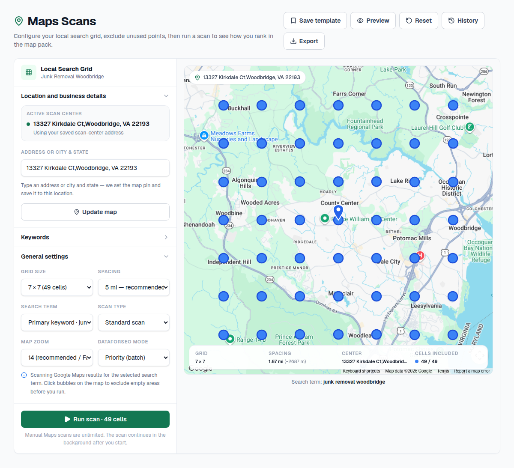
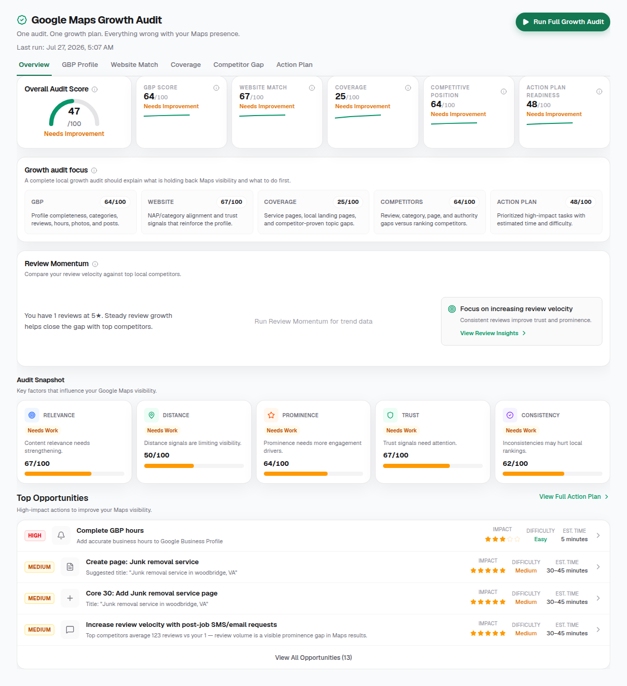
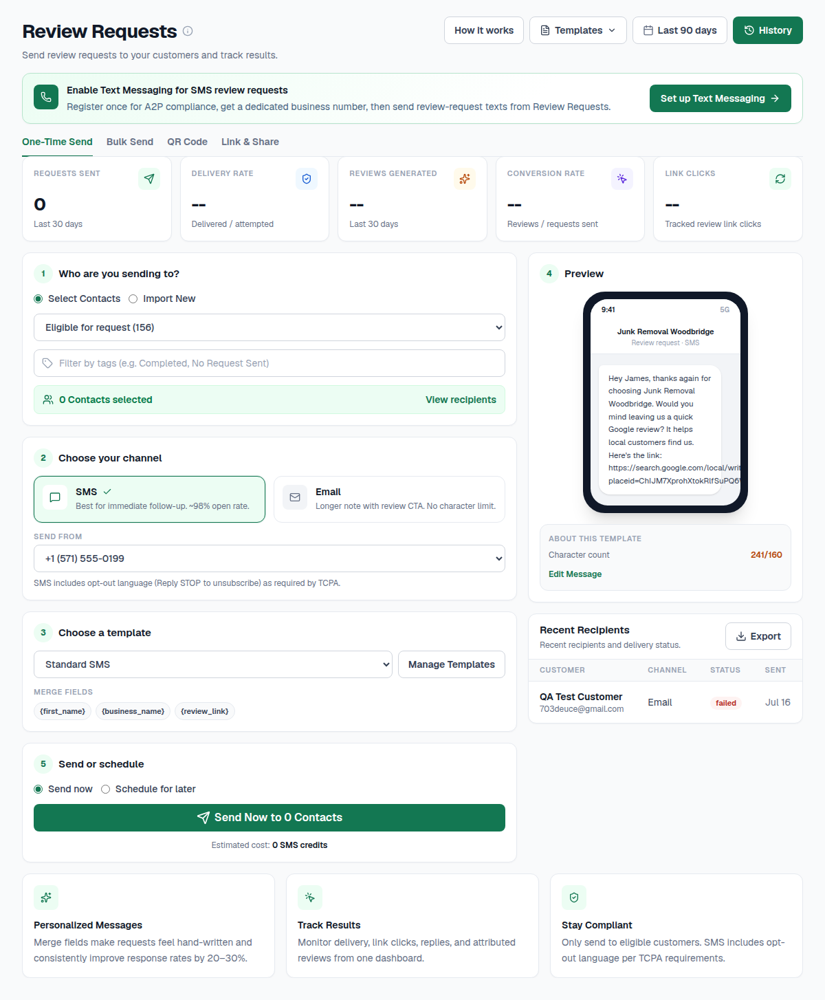
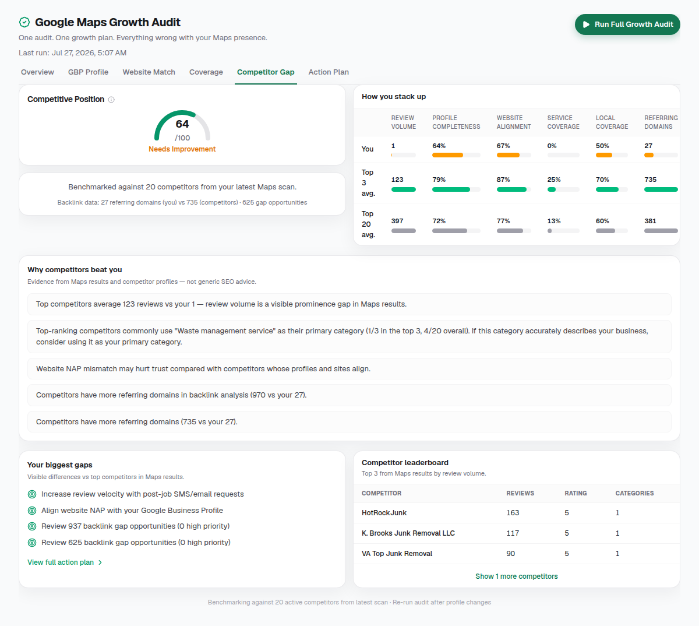
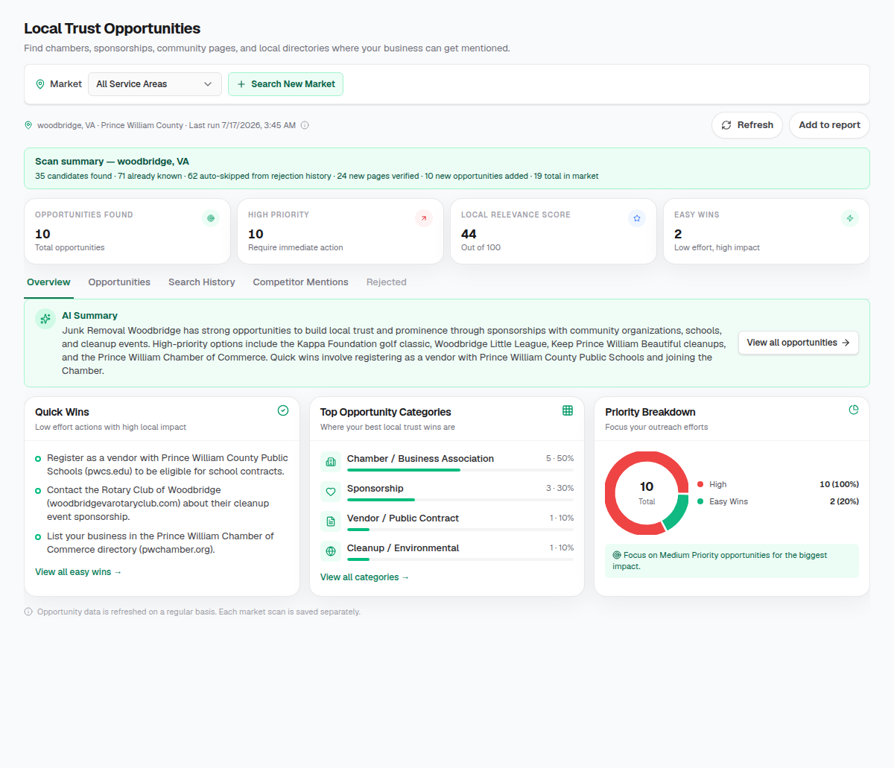

Google Business Profile

- Business information
- Categories
- Photos
- Reviews
- Visibility
- Local engagement
Rank higher in Google Maps by improving the signals that matter most. Local SEO Express helps you find ranking problems, discover new opportunities, and track your progress with one simple dashboard.
Stop guessing why competitors outrank you. Get clear recommendations that help you improve your local visibility and attract more customers.
Find opportunities in minutes. No complicated setup.

Complete toolkit
Profile insights, ranking maps, review tools, and local growth recommendations—organized so you know what to fix first.
The problem
Google Maps rankings depend on your profile, reviews, website signals, local authority, and how you compare to nearby competitors. Fixing one item while ignoring the rest often leads to slow progress.
Most local businesses do not have time to research every factor. They need a clear picture of what matters most—and practical tools to act on it.

Simple process
Local SEO Express helps you understand your current visibility, compare against competitors, and focus on the improvements that can move your rankings.
Connect your business and run a local visibility scan. See rankings, profile health, and competitor gaps in minutes.
View interactive heat maps that show where your business appears across your service area—not just one search result.
Review prioritized recommendations for your profile, reviews, rankings, authority, and AI visibility.
Monitor ranking trends, review growth, and profile improvements over time from one dashboard.
All-in-one toolkit
Six connected tools help you improve the signals that influence Google Maps visibility—from your profile and reviews to rankings, competitors, authority, and AI search.




Review growth
Reviews support trust and local competitiveness. Local SEO Express includes review request tools so you can ask real customers at the right time—without making them search for your Google profile.
Send requests by text or email, share direct review links, create branded QR posters, and offer Pay & Review pages that keep the ask simple.
Profile optimization
Your Google Business Profile is one of the strongest signals for Maps visibility. See what is complete, what is missing, and which profile improvements can help customers find and trust your business.
Local SEO Express reviews business information, categories, photos, reviews, and engagement signals—then highlights the fixes that matter most.
Map rankings
A single search result does not show your real coverage. Interactive ranking grids reveal where you rank across your service area—and where competitors may be winning nearby searches.
Track historical scans, average position, visibility scores, and ranking trends so you can see whether your local SEO work is paying off.
Competitive insight
Understanding the competition helps you focus on realistic improvements. Compare review strength, ranking positions, visibility scores, and local authority signals side by side.
See where competitors outperform you—and which gaps you can close with profile updates, review growth, or local authority work.
Local trust
Local authority signals—like community sponsorships, partnerships, and relevant local backlinks—can support stronger Maps visibility and customer trust.
Local SEO Express surfaces practical local opportunities so you can build credibility in your market without chasing random link lists.
AI search
Customers increasingly discover businesses through AI-powered search. Monitor whether your brand appears in AI results—and how competitors show up when people ask for local recommendations.
Identify visibility gaps and get recommendations that connect AI presence to the profile, content, and authority work you can actually control.
Why it works
Local businesses need more than generic SEO advice. They need a clear view of rankings, profile health, reviews, competitors, and local growth opportunities—organized in one practical dashboard.

Before & after
Start with a free scan. See your rankings, profile gaps, and the opportunities that can move your business higher on Google Maps.
Built for locals
Whether you run a storefront, a service-area business, or a multi-location brand, Local SEO Express helps you improve the local signals that influence Google Maps rankings.
One dashboard
Manage rankings, profile insights, review tools, competitor comparisons, and growth recommendations from a single place—without switching between disconnected apps.
As your visibility improves, you can track what changed and keep your team focused on the next highest-impact task.
Real results
Google Maps rankings rarely jump from one big change alone. They improve when profile completeness, review growth, ranking coverage, and local authority move together over time.
Local SEO Express helps you find the right starting point, act on practical opportunities, and measure progress—so each improvement builds toward stronger local visibility and more customer calls.